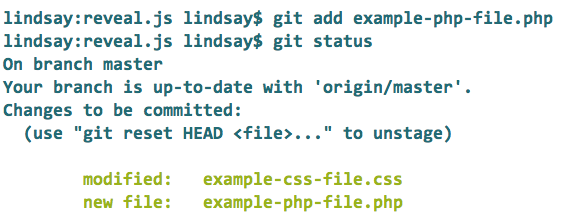
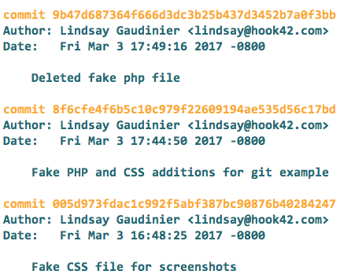

Ready, Git Set, Go!
Understanding Git
Lindsay Gaudinier at Hook 42
About me
- Front End Developer at Hook 42
- Swimming, cats and the internet
Assumptions
- You have basic command line knowledge
- You have Git downloaded and configured on your computer (if not, download Git here: https://git-scm.com/downloads)
- You are patient - some words are mentioned before they are defined

Source: xkcd
Why?
- Because Git is actually pretty awesome
- Fast -- super fast
- Working with large projects with lots of people
- Great for non-linear development
- Work offline! Local work!
- Hard to lose information
Photographs
Git takes photographs of your data
When you decide you want to keep a change - you tell Git to take another photo
This photo is called a commit
Commits look like this:
commit b69e6a0d77ff0faa92e209e67398b0077f4961cd
Let's talk about you
Specifically your local computer
This is where you do all your work
It is called your local
You have a code project your local
The code has Git
.git subdirectory
If not - use git init
Deep breath

Three States of Git
These exist on your local
Data is safely stored on your local
You have changed some data/files but have not recognized these changes
You recognized that changes occurred but you haven't committed these changes to save them
The three states directly relate to...
Three Sections/Trees of A Git Project
We are still only on your local
Stores the metadata and object database for your project
One single checkout of a version of the project
File that stores information about what will go in your next commit
Let's tie it together
Git Project Workflow
Step: 1
Git State:
Modify files
Git Section:
Working Directory
Step: 2
Git State:
Stage the Modified Files
Git Section:
Staging Area
Step: 3
Git State:
Commit these Modified Files
Git Section:
Git Directory
Let's get to work!
Check the state of the Git Project (Working Directory, Staging Area, and Git Directory)
git status
Make some changes to a CSS file
In the Working Directory
Add these CSS changes to the Staging Area
git add [filename]
Add a completely new PHP file
Add this new file to the Staging Area
git add [filename]
Must add new files to track them in Git
Git Diff - Comparing Sections/Trees
Difference between your Working Directory with your Staging Area
git diff
Difference between your Staging Area and your Git Directory
git diff --staged
git diff --staged
Git Commit
When the Staging Area is how you like it and you want to move the changes from the Staging Area to the Git Directory
git commit
Git Commit
Records a snapshot of your project that you can revert back to
Commit Message
git commit launches a text editor
Write a good commit message

Good Commit Messages
- Formatting: first line is 50 characters max, blank line, remaining text wrapped at 72 characters
- Include a ticket/task number
- Explain why you are making the commit
- What is being changed in the commit
Hate Command Line Text Editors?
add the -m flag and avoid the editor
git commit -m["Your message goes here"]
Commit Output
- Unique SHA-1 Checksum (long mix of numbers and letters)
- The branch the commit is on (we will get to this)
- The file changes
- Stats about the lines added/removed
Removing a file
Remove the file from your Working Directory
git rm [filename]
Run git commit after removing a file
Renaming a file
git mv [old_file_name][new_file_name]
Run git commit after renaming a file
Ignoring a File
.gitignore file - add or modify
Place the file in the working directory, do not place in .git
Can place the .gitignore file anywhere and have multiple .gitignore files
Unless you have a good reason, place .gitignore at the root of the project
Uses glob patterns
Local settings
Also ignore with .git/info/exclude file
Viewing the Commit History
git log
This will display the most recent commits first
There is a lot you can do to modify this
Git Log
Another Git Log
 Source: coderwall
Source: coderwall
Undoing Things

Warning
⚠ You cannot always undo your undoes!
Make a commit too early and miss files / Write a bad commit message
git commit --amend
Takes your Staging Area and uses that snapshot for the commit
If there are no file changes - this command will rewrite your previous commit message
git commit -m"Great commit message"
git add forgotten_file
git commit --amend -m["Better commit message goes here"]
git commit --amend
Unstaging A Staged File
You changed two files and added both. But you only want to add one to the commit!
Unstage the file you don't want to commit
git reset HEAD [filename]
Unstaging A Staged File
Warning
⚠ If you add options/flags to
git reset HEAD [filename]
things can get dangerous
Unmodifying a Modified File
Did you make some changes, stage those changes and decide you hate them? Undo it!
⚠ Warning: This is an undo that you cannot undo!
git checkout -- [filename]
Unmodifying a Modified File

Git helps teams work together
Remote
A place outside of your local where the code project exists
Git Clone
Receives a full copy of nearly all the data from the remote
git clone [url]
Probably hosted on Acquia, Github, Pantheon, internally, etc
Origin
Default name Git gives the remote server you cloned from
Master
Default name Git gives your local Git project (includes Working Directory, Staging Area, and Git Directory)
List Multiple Remotes
git remote [-v]
The -v flag will provide the url
Get data from a remote
If someone on your team made changes to the remote AFTER you got your code
There are two ways to do this:
git fetch [remote-name]
git merge origin/master
git pull origin master
Quick Review
- Got code from a remote
git clone [url] - Made changes in your Working Directory
- Added these changes to your Staging Area
git add [filename] - Committed these changes with a message
git commit -m"Best commit message ever"
Share your commits with your remote!
Git Push
Geting your commits up to the remote is known as pushing upstream
git push [remote-name][branch-name]
Using Git defaults
git push origin master
Git Push Failed!
Output with failed to push some refs to [url]
Someone on your team has updated the remote, and you need to get these changes before you push
Get data from the remote
git pull origin master
Git Branching
Now Git gets super cool
Git Branching
Separate from the main line of development and continue to do work without messing up the main line
Git Branching
When you make a commit, Git stores a commit object that point to content changes included in that commit
A branch is just a lightweight movable pointer associated with one commit
Remember how git clone [url] called your local Git Project master?
The default Git branch is called master
Every branch has its own Working Directory, Staging Area and Git Directory
Branching and Commits
When you start to make commits, you are given a master branch pointing to the last commit made
Every commit made moves the branch forward
Each commit points back to its parent(s)/ancestor(s)
Master branch
Oldest Commit
Newest Commit
HEAD
A special unique pointer called HEAD keeps track of what branch you are on
HEAD only points to the most recent commit on your current local branch
Oldest Commit
Newest Commit
Switch Branches
Different branches point to different commits
When you switch branches you move your HEAD
git checkout [branch-name]
Let's take a closer look at branching
Scenario
You are on branch master
You have made several commits
You want to make a new branch to work on a specific feature
Make a branch
git status
Make a branch called feature-branch
git branch feature-branch
Switch your HEAD to that branch
git checkout feature-branch
feature-branch and master are pointing at the same commit
Naming Branches
[id][ticket-number][3-to-5-word-summation-of-issue]
h42-1001-header-navigation-styling
Develop on your Branch
Make a commit on feature-branch
feature-branch has moved forward by one commit
Your Local Git Now Looks Like This
If you git checkout master, the HEAD now points to branch master's lastest commit
Your local files revert to match the files of that commit
Divergent History
Someone on your team has some work and updated master
Your local master branch is now behind the remote
Update your local with git pull
Both branches no longer point to the same commit ancestor/parent
Divergent History
Merging
We have decided our feature-branch changes are magical
Let's share this magic - get these changes on our local master and then push up to the remote
git checkout[branch-WANTS-the-changes]
git merge [branch-HAS-the-changes]
Merge Commit
We want to be on the master branch and accept the feature-branch changes
git checkout master
git merge feature-branch
Three-Way Merge Commit
Divergent history - Git uses a three-way merge (also called a merge commit)
Git creates a new commit with a new snapshot
This commit has more than one parent
Three-Way Merge Commit
Non-Divergent History
git checkout master
git merge feature-branch
Two branches with non-divergent history
Git will create a fast-forward merge
Fast Forward Merge
Git simply moves the pointer forward
Fast Forward Merge
After your three-way merge or your fast-forward merge, push up to your remote and everyone can access your changes
Git Conflict
Unless. It. All. Goes. Horribly. Wrong.
Git Conflict
Not really that big of a deal, but you do need to be careful and deliberate in your actions
If the same part of a file is changed on two branches
Appears when you try to merge these two branches
Git pauses the process and tells you there is a conflict
Still only on your local, so nothing is broken for everyone else (yet)
What's Going On?
Git has added conflict markers <<<<<<<, =======, and >>>>>>> in the files
Your HEAD changes appear above the =======
The branch's changes you are trying to merge into your HEAD appears underneath the =======
Fix it!
Solve the conflict by choosing your HEAD changes, the branch changes or select what you want from both
There are a bunch of GUI merge conflict tools
Old school: Edit the file and make sure you remove the conflict markers
Conflict Resolution
After you have resolved the conflict
git add [filename]
Check that you fixed all the file conflicts
git status
Finalize the merge commit
git commit
Avoid Merge Conflicts
- Communicate with your team!
- Make sure your master branch is up to date with remote
- Recompile, ex. css.map
Merging's Semi-Evil Twin: Rebasing
Integrates changes from one branch into another like merging
Takes all the changes committed on one branch and replays them on another
Makes a cleaner history
Git Log - Rebasing
How Rebasing Works
We want to rebase the changes feature-branch onto master
git checkout feature-branch
git rebase master
Now we need to do a fast-forward merge
git checkout master
git merge feature-branch
Rebasing
Branches look linear instead of parallel
Warning! Warning! Warning!
Rebasing rewrites history
⚠ Do not rebase commits that exist outside of your repository
⚠ Do not rebase commits that others may have based work off of
Cherry-Pick
A cherry-pick is a rebase for a single commit
Cherry-Pick
Pull in the second commit on feature-branch 45ec9 into master
git checkout master
git cherry-pick 45ec9
This creates a new commit
Cherry Pick
Stashing
Current problem is a work in progress, but need to switch branches for a hotfix
Want to fix the hotfix with a clean Working Directory, but still keep the progress you made
Save the state of modified tracked files and staged changes
git stash
Working directory is now clean
Stashing
Stashing - Files Overwritten By Checkout
Reapply A Saved Stash
List your stashes - most recent stash is first
git stash list
Reapply a stash
git stash apply stash@{1}
Git assumes most recent stash if you don't specify
Create a Branch from a Stash
Use if the stash has been left alone for some time
git stash branch [branch-name] [stash-number]
git stash branch feature-branch stash@{1}

Git Blame
git blame [filename]
Goes through every line and tells you who made the last change to the line
git blame -L [startLineNumber], [endLineNumber] [filename]
git blame -L 40, 60 foo.txt
Git Blame
This is just skimming the surface of Git
References
- Git manual
- Read the book
- Common Git mistakes
- Write good commit messages
git help [verb]
git [verb] --help
man git-[verb]